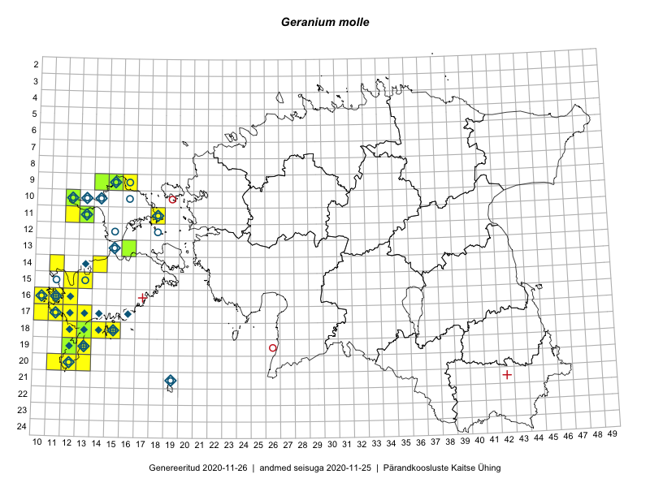

Geranium molle
Uuendatud: 2016-12-07
Kaardile koondatud taksonid: Geranium molle L.

Kaart põhineb 37 vaatlusel. Taime on leitud 25 ruudust.
| Ruut | Vaatleja(d) | Vaatlusaeg | Kirje tüüp | Viide andmebaasikirjele |
|---|---|---|---|---|
| Malle Leht | 2015-07-09 | ruut/ala | vaata PlutoFis | |
| 09-14 | Peedu Saar, Toomas Kukk | 2015-05-27 | ruut/ala | vaata PlutoFis |
| 09-16 | Peedu Saar, Toomas Kukk | 2015-05-27 | ruut/ala | vaata PlutoFis |
| 16-10 | Toomas Kukk | 2014-06-21 | ruut/ala | vaata PlutoFis |
| 17-13 | Mari Reitalu, Sirje Azarov | 2015-05-12 | ruut/ala | vaata PlutoFis |
| 05-28 | Erkki Otsman, Sergei Smirnov | 2015-06-26 | ruut/ala | vaata PlutoFis |
| 17-10 | Mari Reitalu, Triin Reitalu | 2015-05-10 | ruut/ala | vaata PlutoFis |
| 15-12 | Mari Reitalu, Triin Reitalu | 2015-05-24 | ruut/ala | vaata PlutoFis |
| 17-12 | Mari Reitalu | 2015-08-25 | ruut/ala | vaata PlutoFis |
| 19-13 | Oliver Parrest | 2015-05-20 | ruut/ala | vaata PlutoFis |
| 16-12 | Mari Reitalu | 2015-07-27 | ruut/ala | vaata PlutoFis |
| 18-12 | Mari Reitalu, Oliver Parrest | 2015-05-22 | ruut/ala | vaata PlutoFis |
| 18-12 | Mari Reitalu, Sirje Azarov, Oliver Parrest | 2015-08-02 | ruut/ala | vaata PlutoFis |
| 20-11 | Mari Reitalu, Oliver Parrest | 2015-05-26 | ruut/ala | vaata PlutoFis |
| 14-11 | Mari Reitalu, Triin Reitalu | 2015-05-24 | ruut/ala | vaata PlutoFis |
| 18-14 | Oliver Parrest | 2015-05-23 | ruut/ala | vaata PlutoFis |
| 18-15 | Oliver Parrest | 2015-05-23 | ruut/ala | vaata PlutoFis |
| 20-12 | Mari Reitalu, Oliver Parrest | 2015-05-26 | ruut/ala | vaata PlutoFis |
| 20-12 | Triin Reitalu, Sirje Azarov | 2015-05-30 | ruut/ala | vaata PlutoFis |
| 18-13 | Mari Reitalu | 2014-06-14 | ruut/ala | vaata PlutoFis |
| 18-13 | Mari Reitalu, Oliver Parrest | 2015-05-27 | ruut/ala | vaata PlutoFis |
| 16-11 | Mari Reitalu, Triin Reitalu | 2015-05-28 | ruut/ala | vaata PlutoFis |
| 16-10 | Sirje Azarov, Mari Reitalu | 2015-05-22 | ruut/ala | vaata PlutoFis |
| 17-11 | Mari Reitalu, Triin Reitalu | 2015-05-19 | ruut/ala | vaata PlutoFis |
| 16-11 | Sirje Azarov, Mari Reitalu | 2015-05-23 | ruut/ala | vaata PlutoFis |
| 18-13 | Oliver Parrest | 2015-07-15 | ruut/ala | vaata PlutoFis |
| 16-12 | Mari Reitalu, Triin Reitalu | 2015-04-30 | ruut/ala | vaata PlutoFis |
| 10-12 | Meeli Mesipuu | 2015-05-27 | ruut/ala | vaata PlutoFis |
| 11-12 | Meeli Mesipuu, Timo Luhamäe | 2015-05-27 | ruut/ala | vaata PlutoFis |
| 06-25 | Mari Metsoja, Jaak-Albert Metsoja | 2015-07-25 | ruut/ala | vaata PlutoFis |
| 18-15 | Mari Reitalu | 2014-07-17 | ruut/ala | vaata PlutoFis |
| 19-12 | Ott Luuk, Mari Reitalu, Thea Kull | 2014-05-23 | ruut/ala | vaata PlutoFis |
| 20-12 | Mari Reitalu, Sirje Azarov | 2016-08-08 | ruut/ala | vaata PlutoFis |
| 18-14 | Ott Luuk | 2016-08-30 | ruut/ala | vaata PlutoFis |
| 19-12 | Ott Luuk, Peedu Saar | 2016-10-07 | ruut/ala | vaata PlutoFis |
| 04-28 | Kadi-Liis Kesler, Tiina Elvisto | 2015-05-27 | ruut/ala | vaata PlutoFis |
| 07-28 | Meeli Mesipuu, Thea Kull | 2016-05-12 | punkt | vaata PlutoFis |